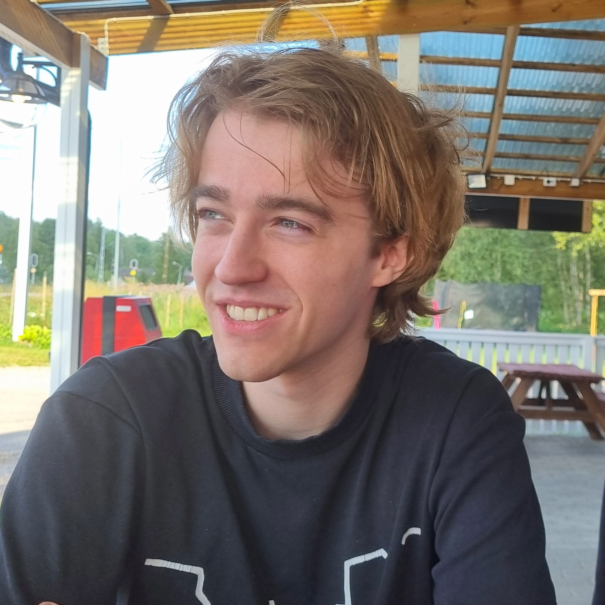
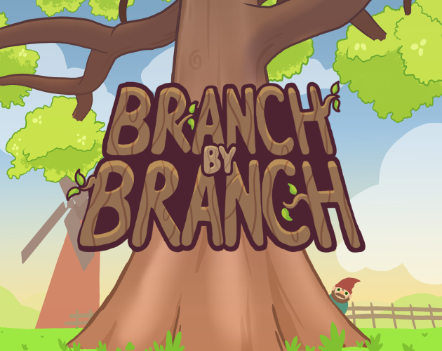
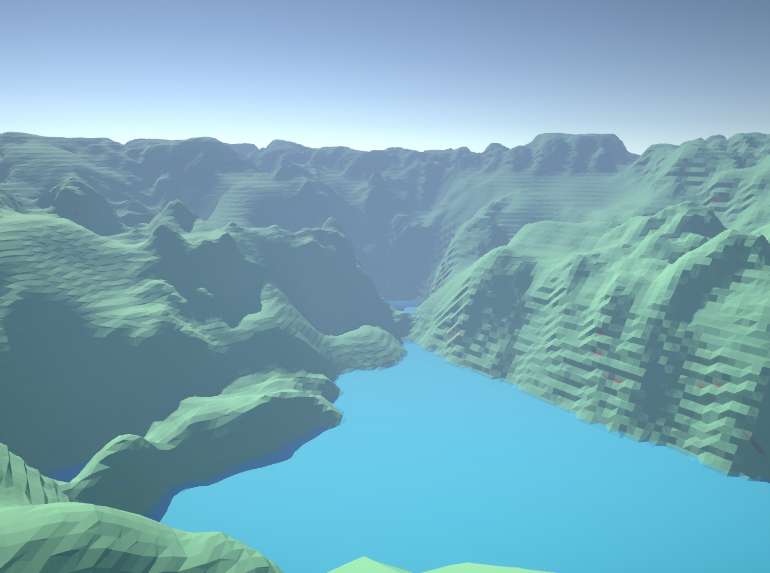

Hello! My name is Vide Frändén, and I'm a programmer based in Sweden. I love problem-solving and technical challenges, and have been interested in game-development for as long as I can remember!
Projects

Branch by Branch
4
Ongoing
'Branch by Branch' was initially started as my last course project. What started as a simple singleplayer climbing game, then turned into a long-term online co-op game! This game was nominated for the SAGA-award!

Marching Cubes
1
3 weeks
'Marching Cubes' was a course project where the goal was to learn more about procedural generation and procedural mesh-generation during runtime. The project was made in parallell/collaboration to a peer who did a similar project.
The Final Escape
12
12 weeks
'The Final Escape' is a horror game where your goal is to escape a serial killer. If he finds out that you are escaping, he'll make sure that you won't try again. This game was made during a course together with 10 others.
Game Jams
Masquerade
4
48 Hours
You have been invited to a grand masquerade. Among the guests, there is one intruder. Sever their strings. This game was made with a group of artists in 48 hours for the Global Game Jam.
You Oar Me
3
48 hours
'You Oar Me' is a boat-racing game where you compete against your toughest rival - yourself. This project was made during a 48 hour game-jam, and was my first time using the Godot game engine.
Squeaky Clean
4
48 Hours
A rat-washing simulator gone wrong. Gone.... to war????!!!???? A game about washing stinky rats so that they can participate in medieval warfare. This game was made with a group of artists in 48 hours for the Global Game Jam.